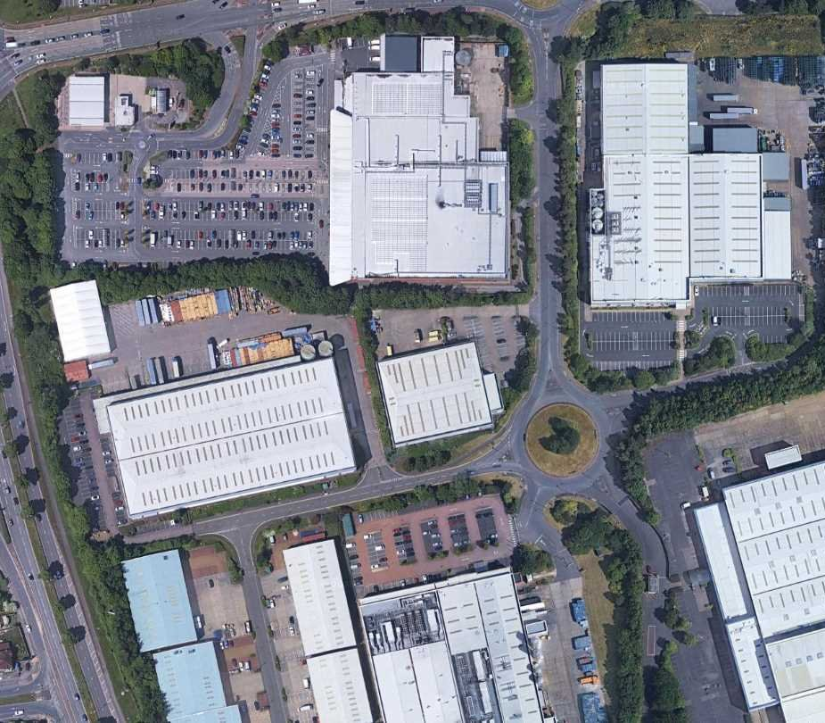
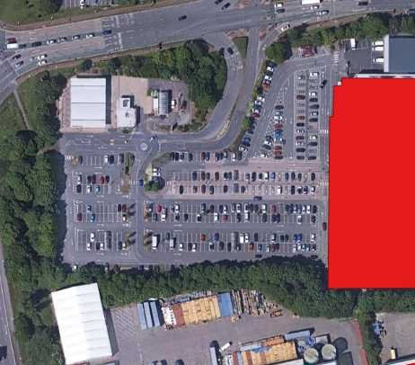
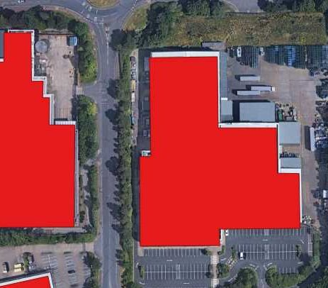
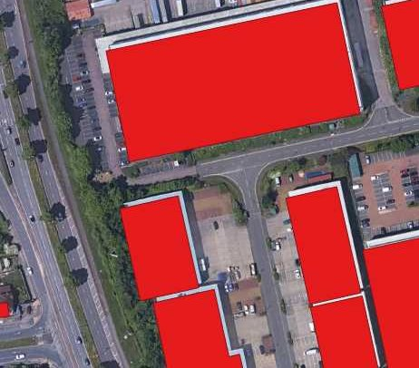
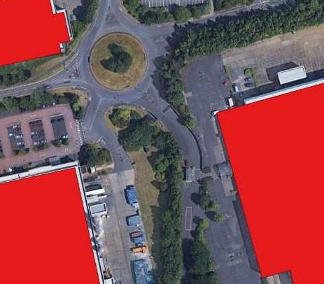
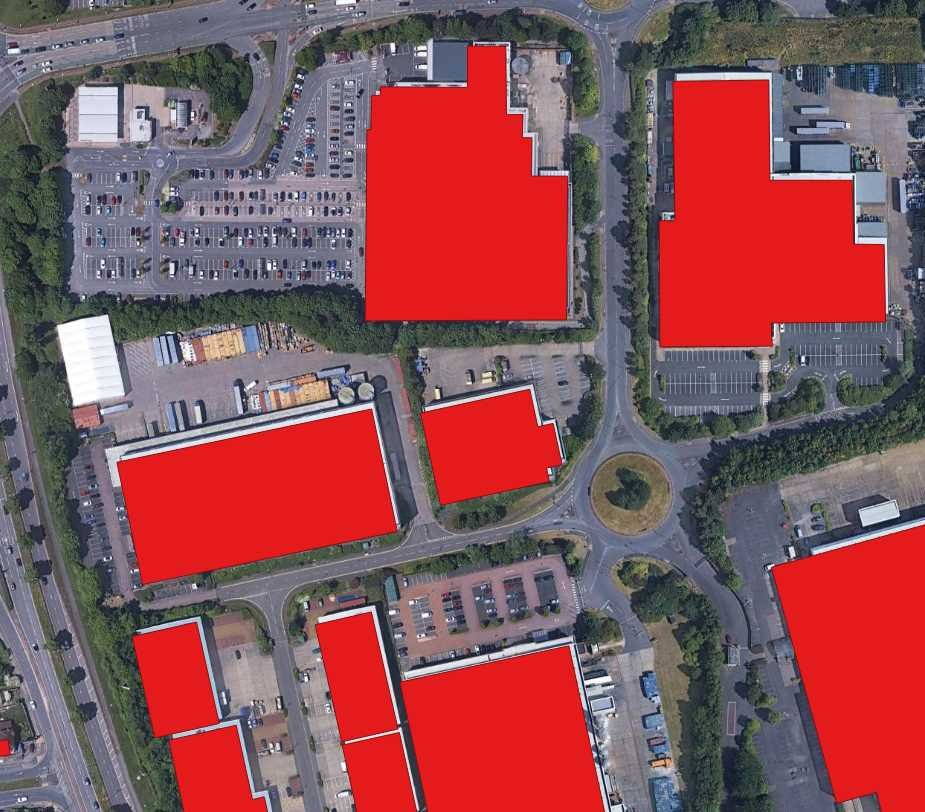
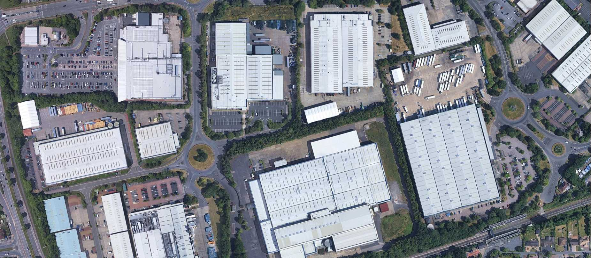
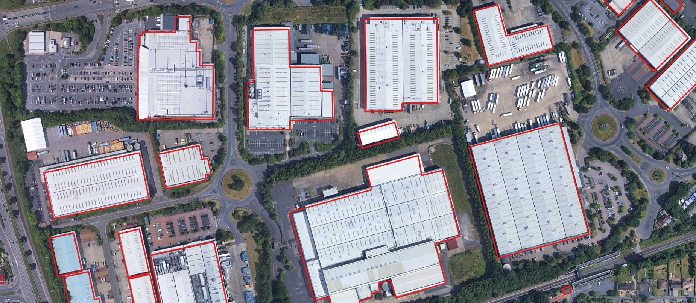
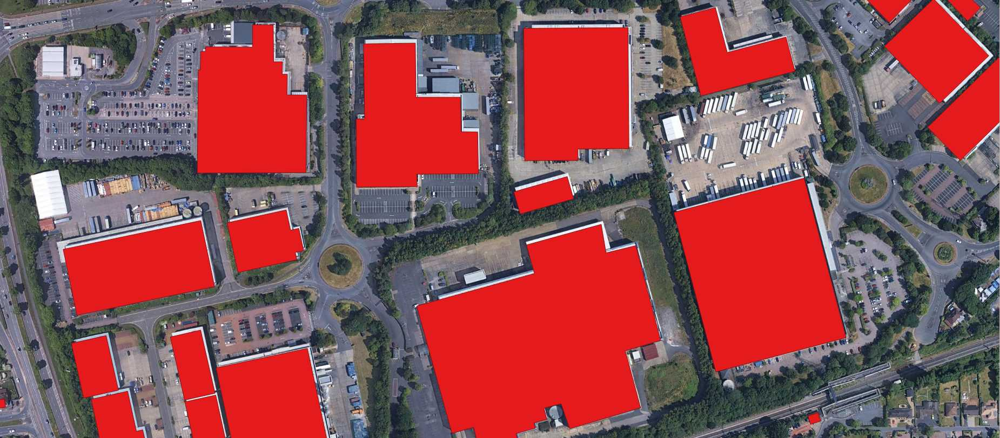

Step 1
Start with a large satellite image
We begin with an image that covers the area we want to study. It shows buildings, roads, vegetation, and other features from above.

Good to know: If one image is not enough to cover the area, several neighboring images may first be combined into a larger image. This is called mosaicking. The images also need to line up, so the same buildings and roads appear in the right positions. Not every project needs this.
Step 2
Split the image into smaller tiles
A large image is divided into smaller images, often using a grid, so that the AI system can process them. This is called tiling.
How does tiling work?
Choose a view. All three views use the same image.
Showing: the original large image.
Step 3
AI analyzes each tile
The AI system looks at each small image and looks for features in it. Its answers are called predictions. Here, the AI marks the exact shape of each building. This is called segmentation, and each shape can be saved as a building polygon.


Step 4
Combine and clean up the results
The results from the individual tiles must be brought together to form a complete view of the study area. Some results may need to be merged or checked, especially near tile boundaries, where one building can be cut into pieces.
This clean-up is called post-processing. Typical jobs are: joining the pieces of a building that was cut by a tile edge, removing a building that was found twice, removing tiny shapes that are probably mistakes, and tidying up wobbly outlines.
From tile results to one result
Each tile has its own results. Click the button to bring them together or split them apart.



Showing: separate results for each tile.
Real example
See it on a real satellite image
Choose a view. All three pictures show the same scene; only the building drawing on top changes.



Showing: the satellite image without any drawing.
Step 5
Put the results on the map
So far, the AI only knows where a building is inside the picture, for example "300 pixels from the left and 120 pixels from the top". That position means nothing outside this one image.
Georeferencing links the picture to the real world. It tells us which place on Earth each part of the image shows. Satellite images usually come with this information, such as the real-world location of the image corners. With it, every building outline can be moved from picture positions to map positions (longitude and latitude).
Position in the image
Counted in pixels: how far right and how far down. Only makes sense for this one picture.
Position on the map
Latitude and longitude: a real place on Earth. Can be shown on any map and combined with other data. (The numbers in this picture are examples.)
Why it matters: once the buildings have real locations, we can show them on a map, measure them, and compare them with other information, such as roads, schools or older images of the same place.
The buildings on a real map
These building outlines are stored with longitude and latitude, so the map can place them exactly. Drag to move, use + and − to zoom, and click a building to see its ID.
Loading the building data...
Case study
Case Study: Solar Site Identification
The challenge
Checking buildings for solar one by one takes a long time. Over a large area, someone has to collect information about many individual rooftops.
How geospatial AI helps
Computer vision finds buildings in satellite images and measures useful rooftop details. Public datasets and APIs, and paid imagery or data when needed, add more information. Together they form one searchable building dataset.
The result
People can explore the buildings on a map and filter them to find promising candidates for a proper solar assessment.
Explore the buildings
Demonstration with sample data. The building IDs and all values are synthetic sample values. Energy yields are illustrative only and are not verified solar assessments.
Filter and search
Any
Any material
- Lower energy (under 1.7 million kWh/year)
- Medium (1.7 to 3 million kWh/year)
- Higher energy (3 million kWh/year or more)
- No valid energy value
- Selected building
Click a colored building to zoom in and see its details. Use + and − to zoom out again.
Loading the building data...
Building details
Click a building on the map to see its details.